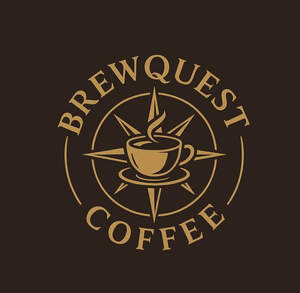

Trade Mark Journal No.2025/048 28 November 2025
UK00004297564 20 November 2025 (30,43)

- Class 30
- Coffee; Decaffeinated coffee; Iced coffee; Chocolate coffee; Coffee drinks; Coffee beans; Mixtures of malt coffee with coffee; Coffee beverages; Coffee (Unroasted -); Unroasted coffee; Caffeine-free coffee; Coffee extracts for use as substitutes for coffee; Coffee essences for use as substitutes for coffee; Coffee substitutes [artificial coffee or vegetable preparations for use as coffee]; Malt coffee; Coffee pods; Coffee beverages with milk; Flavoured coffee; Coffee bags; Unroasted coffee beans; Coffee flavorings; Coffee capsules; Mixtures of malt coffee extracts with coffee; Roasted coffee beans; Instant coffee; Freeze-dried coffee; Coffee flavourings; Beverages with coffee base; Beverages with a coffee base; Coffee oils; Espresso; Ground coffee; Coffee based drinks; Coffee in whole-bean form; Beverages made from coffee; Beverages made of coffee; Sugar-coated coffee beans; Coffee extracts; Ground coffee beans; Drip bag coffee; Substitutes (Coffee -); Coffee substitutes; Aerated drinks [with coffee, cocoa or chocolate base]; Coffee essences; Coffee based beverages; Mixtures of coffee; Coffee mixtures; Cappuccino; Aerated beverages [with coffee, cocoa or chocolate base]; Prepared coffee and coffee-based beverages; Coffee concentrates; Coffee in brewed form; Mixtures of coffee and chicory; Coffee, teas and cocoa and substitutes therefor; Mixtures of malt coffee with cocoa; Mixtures of coffee essences and coffee extracts; Powdered coffee in drip bags; Ice beverages with a coffee base; Prepared coffee beverages; Coffee essence; Malt coffee extracts; Mixtures of coffee and malt; Coffee [roasted, powdered, granulated, or in drinks]; Chai tea; Tea beverages with milk; Chocolate bark containing ground coffee beans; Extracts of coffee for use as flavours in beverages; Chocolate cake; Sponge cake; Cakes; Treacle cake; Chocolate cakes; Cake bars; Powder (Cake -); Ice-cream cakes; Cream cakes; Sponge cakes; Cupcakes; Dough for cakes; Deep chocolate cake made with chocolate sponge; Iced sponge cakes; Iced cakes; Fruit cakes; Tea cakes; Fruit cake snacks; Rice cake snacks; Plum cakes; Chocolate covered cakes; Cheesecake; Iced fruit cakes; Candy decorations for cakes; Vegan cakes; Ice cream cakes; Rice cakes; Cakes (Rice -); Pastries, cakes, tarts and biscuits (cookies); Malt cakes; Moon cakes; Flavorings for cakes; Chocolate-coated rice cakes; Half-moon-shaped rice cake [songpyeon]; Frozen cakes; Flapjacks [griddle cakes]; Chocolate-based fillings for cakes and pies; Flavourings for cakes; Chocolate brownies; Sponge fingers [cakes]; Chocolate marzipan; Icing sugar; Candied cakes of popped rice; Macaroons [pastry]; Mixes for making cakes; Brownies; Strawberry gateaux; Frozen yogurt cakes; Dessert puddings; Frosting mixes; Chocolate biscuits; Stir fried rice cake [topokki]; Mixtures for making cakes; Cheesecakes; Chocolate for confectionery and bread; Pounded rice cakes (mochi); Ice cream gateaux; Chocolate pastries; Rice-based pudding dessert; Custards [baked desserts]; Steamed sponge cakes (fagao); Tiramisu; Viennese pastries; Danish pastries; Bakery goods; Tea; Iced tea; Prepared desserts [pastries]; Chocolate desserts; Pastries; Pies; Bagels; Croissants; Sandwiches; Toasted sandwiches; Waffles; Toasted bread.
- Class 43
- Coffee shops; Coffee shop services; Coffee bar services; Cake decorating; Cafe services; Café services; Cafés; Serving food and drink in Internet cafes; Bar and restaurant services; Restaurant and bar services; Providing food and drink in Internet cafes; Take-away restaurant services; Serving food and drink in doughnut shops; Providing food and drink in doughnut shops; Take-out restaurant services; Restaurants (Self-service -); Serving food and drink in restaurants and bars; Mobile restaurant services; Brasserie services; Hookah lounge services; Catering in fast-food cafeterias; Snack bar services; Providing food and drink in restaurants and bars; Eateries; Providing food and drink in bistros; Tourist restaurants; Delicatessens [restaurants]; Cocktail lounge buffets; Restaurants; Provision of food and drink in restaurants; Office catering services for the provision of coffee; Serving food and drink for guests in restaurants; Restaurant reservation services; Cocktail lounge services; Lounge services (Cocktail -); Take-away food and drink services; Booking of restaurant seats; Grill restaurants; Catering of food and drinks; Takeaway food and drink services; Teahouse services; Food and drink catering; Catering of food and drink; Catering (Food and drink -); Providing food and drink for guests in restaurants.
Marcin Grabowski